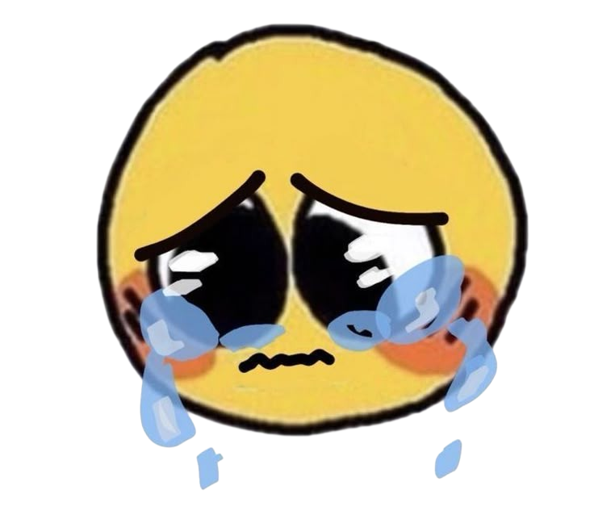
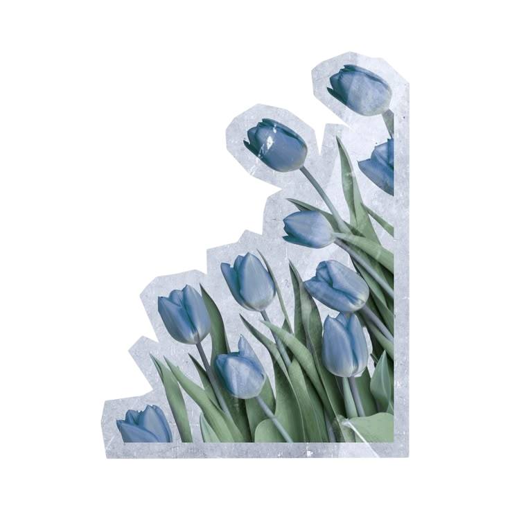

yang terakhir...
hubungan ini mau dibawa kemana?
nahh ini posisi kita sekarang ya? gatau mau dibawa kemana, sebenernya ada beberapa alasan yang ngebuat aku bingung hubungan ini mau gimana, em gimana bilangnya ya
- aku masih mikir kalo aku belum pantes buat kamu
- kalo aku pacaran, aku masih belum bisa ngontrol cemburu aku (u know lah) aplg km artis trs bnyk yg sk km
- aku masih ngebanding bandingin diri aku sendiri sama orang lain
- setiap kamu bikin sw atau apapun itu yang berhubungan sama percintaan gitu, aku gatau buat siapa tapi kalo tujuan sw kamu itu aku (aku selalu nganggep sw sw kamu itu buat orang lain bukan buat aku karn aku hanyalah npc) jadi maaf kalo kepedean kalo kamu bikin ssw itu aku selalu nganggep bukan buat aku hhe
em udah si paling gitu, oiya entah kamu uda lupain ato masi inget (bagus kalo uda lupa) cuma kalo masi inget aku pengen minta maaf uda bikin kamu benci hari ulang taun kamu (MAAF SEBESAR BESARNYA) i hope u forget that, sama maaf ya aku kaya mainin perasaan kamuu, am so sorry for that,aku gabermaksud kaya gitu, slema ini aku selalu mikir dan nyoba buat percaya sama hati aku lagi dan aku uda sebagian nerima hati aku (uda 3/4) jadi kasi aku waktu bentarr lagi buat mikir ya? janji gaakan lama ko (aku gaberniat pergi atau lepasin kamu lagi btw, aku pengen kamu bahagia dan di kebahagiaan itu ada aku didalamnya)